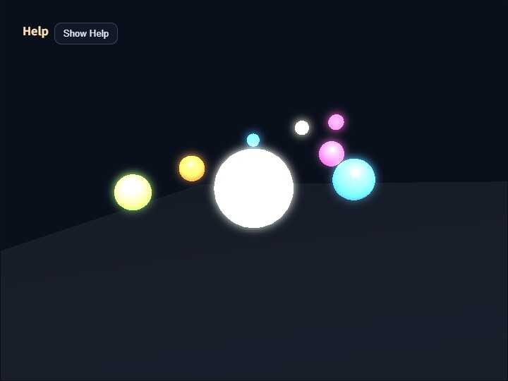

bloom
English | 日本語

概要
- BloomPass を使って、3D scene を一度 offscreen RenderTarget へ描いてから bloom 合成して canvas へ戻すサンプルです。
- PBR や shadow map を入れる前でも、postprocess を別レイヤとして独立に追加できることを確認するための最小実装です。
- WebgApp は起動と CommandPalette 表示に使いつつ、3D scene 本体は autoDrawScene: false で offscreen 描画へ切り替えています。
- 操作説明は buildHelpPanelOptions() と showOverlayPanel() を使って左上へまとめ、不要なときは本文を畳んで Show Help ボタンだけを残せるようにしています。
- 中央球の specular highlight だけでなく、暖色 / 青 / ピンクの強い emissive 小球も置き、色付き glow が背景側へどう広がるかも見やすくしています。
実行方法
- 実行ファイルは ./bloom.html です
- WebGPU に対応したブラウザで開き、必要に応じて help panel と CommandPalette と合わせて確認してください
使用している webg 機能
- buildHelpPanelOptions() + showOverlayPanel(): 左上の help panel を標準形式で生成し、操作説明の表示 / 非表示を切り替える
- EyeRig(type="orbit"): シーン全体を見回すオービット視点
- RenderTarget: 3D scene の描画先となる offscreen color/depth texture
- BloomDebugFullscreenPass: canvas と同じ色形式の scene / extract と、低解像度の blur target を正規化 UV で画面全体へ拡大して診断表示する
- WebgApp.light.mode = "world-node": カメラ固定ではなく world 空間に置いた light を使うフロー
- Shape: glow object と floor の形状生成
- CommandPalette: bloom parameter の current value を表示しながら変更する設定パネル
確認ポイント
- 3D scene が直接 canvas ではなく offscreen target に描かれ、その後 bloom 合成を経て表示されることを確認します
- 中央球と周囲の bright orb の周辺ににじみが出て、単なる blur ではなく明るい部分だけが広がることを確認します
- 画面上部奥の暖色 / 青 / ピンクの emissive 球の周囲にも glow が出て、背景色の暗い領域へ色付き bloom が乗ることを確認します
- 左上の help panel に操作説明が表示され、Hide Help を押すと Show Help ボタンだけが残り、Show Help で再表示できることを確認します
- CommandPalette は Strength などの現在値を stepper / select / toggle 上へ表示し、その場で変更できることを確認します
- B で bloom の ON / OFF を切り替えたとき、同じ scene のまま postprocess の有無だけが変化することを確認します
- 1 / 2 で threshold、3 / 4 で strength、5 / 6 で blur iteration、7 / 8 で blur radius を変えたとき、画面上の見えと CommandPalette の数値が一致することを確認します
- A / S で extractIntensity を変えたとき、色付き emissive と highlight が extract view へどれだけ強く回るかを確認します
- U で blur quality を full / half へ切り替えたとき、にじみの見え方と blur target サイズがどう変わるかを確認します
- Q / W で softKnee、A / S で extractIntensity、T / Y で exposure、G で tone map mode を切り替えたとき、抽出境界と最終合成の見え方がどう変わるかを確認します
- CommandPalette の Tone Map と Exposure の row で、bloom 合成後の色を tone mapping していることを確認します
- threshold 境界だけが急に切り替わるのではなく、softKnee により highlight 周辺が少し滑らかに抽出されることを確認します
- bloom extract は luma だけでなく max(rgb) も強めに使うため、青やピンクの強い emissive が extract view に乗りやすいことを確認します
- V で composite / scene / extract / extractHeat / blurA / blurB を切り替え、extract そのものの色と、gain を heat 表示した状態を切り分けて確認できることを確認します
- viewport サイズが変わっても BloomPass.resizeToScreen() により offscreen target が追従し、ぼけの位置ずれや解像度崩れが起きないことを確認します
- カメラだけを回してもハイライト位置が完全には追従せず、world 固定 light が使われていることを確認します
- 幅が狭いときも CommandPalette を必要なときだけ開けるため、画面を覆い続けずに parameter を確認できることを確認します
操作方法
- 左上 help panel の Hide Help / Show Help: 操作説明本文の表示 / 非表示
- ドラッグ / 矢印キー: オービットカメラ回転
- ホイール / [ / ]: ズーム
- B: bloom の ON / OFF
- 1 / 2: threshold を下げる / 上げる
- 3 / 4: bloom strength を下げる / 上げる
- 5 / 6: blur iteration を減らす / 増やす
- 7 / 8: blur radius を減らす / 増やす
- U: blur quality を full / half で切り替える
- Q / W: softKnee を下げる / 上げる
- A / S: extractIntensity を下げる / 上げる
- T / Y: exposure を下げる / 上げる
- G: tone map mode を off / reinhard / aces で切り替える
- V: composite / scene / extract / extractHeat / blurA / blurB 表示切り替え
- Space: orb 回転の一時停止 / 再開
- R: bloom パラメータを初期値へ戻す